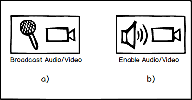
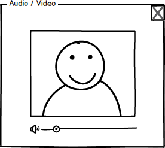
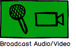

The presenter has the option to broadcast both audio and video during a presentation. The students are able to view and listen to such a broadcast once it is live. The 'Audio/Video' button is located in the top right of the main EClass window.
Figure 1a shows the presenter's 'Audio/Video' button and figure 1b shows the student version.

Figure 1: The Audio/Video button.
When the presenter clicks the 'Audio/Video' button, the EClass creates an audio and video stream that students can open (or enable). Both the presenter's and student's 'Audio/Video' button display a new window for the stream when clicked.
Figure 2 shows the 'Audio/Video' window.

Figure 2: The Audio/Video window.
Figure 3 shows the presenter's 'Audio/Video' button when a broadcast is live.

Figure 3: The Audio/Video button when a broadcast is live.
While the EClass provides the means for broadcasting and viewing an audio/video stream, it does not support saving the stream. Students who want to view or listen to the stream are required to be connected to the EClass as the presenter broadcasts it. However, students and presenters alike are free to record streams using a third-party tool or application if they choose to do so.